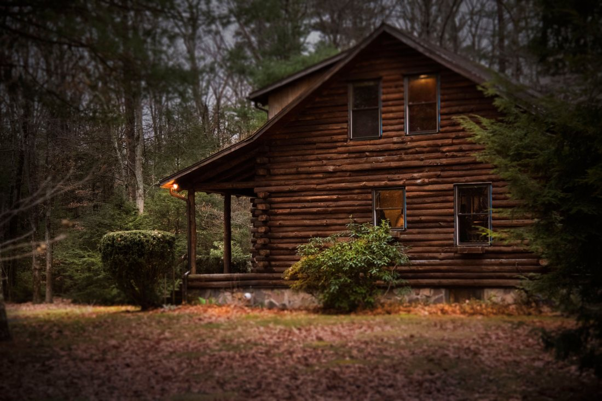

Cabañas · Coñaripe
Le arriendan
a Silvia
- 4,9
- en Google
- 42
- reseñas
- —
- años recibiendo gente falta
Un 4,9 con cuarenta y dos reseñas en un pueblo chico no se consigue con sábanas limpias: se consigue con alguien que está. Esa persona es el negocio, y hoy no aparece por ninguna parte.
Qué significa en la práctica
Donde Silvia
«Atendido por su dueña» está escrito en media internet y casi nunca significa nada. Acá sí significa cosas concretas, y son las que hay que poner por escrito — porque son exactamente lo que un portal de reservas no puede ofrecer aunque quiera.
-
Quién recibe cuando uno llega
falta: conversarlo con Silvia
Si recibe ella misma, eso se dice con esas palabras. Es la diferencia entre una llave en una caja con código y alguien que abre la puerta y explica dónde está todo.
-
A quién se le avisa si algo falla
falta: conversarlo con Silvia
A las once de la noche, con el agua caliente cortada, la única pregunta que importa es si hay alguien que conteste. Que exista un número directo —y que esté escrito— vale más que cualquier foto.
-
Cómo se reserva de verdad
falta: conversarlo con Silvia
Sin formularios ni sistemas: se habla, se acuerda y listo. Decirlo así ordena la expectativa y saca de encima al que busca reservar a las tres de la mañana sin hablar con nadie.
-
Qué se puede pedir y qué no
falta: conversarlo con Silvia
Llegar tarde, dejar el auto adentro, una cuna, quedarse una hora más el domingo. En un negocio atendido por su dueña muchas de esas cosas se pueden — y nadie pregunta porque asume que no.
Lo que esta sección no hace. No cuenta la historia de Silvia, no dice hace cuántos años empezó ni por qué. No la conozco, y escribir la biografía de una persona real sin haber hablado con ella sería exactamente el tipo de cosa que hace que una página se sienta falsa. La estructura está lista; las palabras son suyas.
Lo que un portal no puede poner
Acá no se arrienda a una empresa: se le arrienda a Silvia
En un portal de reservas todas las cabañas se ven iguales: fotos parejas, precio y un botón. Lo que no cabe ahí es que alguien conteste el teléfono a las nueve de la noche, que sepa qué hacer si llegan más tarde de lo previsto, y que el lugar tenga dueña con nombre. Eso vale, y por eso el negocio se llama como ella.
Lo que se ve al llegar
El terreno
Lo segundo que decide un arriendo, después de la persona, es el lugar: cuánto espacio hay afuera, si los niños pueden andar sueltos y qué separa una cabaña de la otra. Nada de eso está publicado.
- Cuántas cabañas hay y cómo están repartidas
- falta Dos cabañas pegadas y dos separadas por el terreno son experiencias distintas. La segunda se cobra más y casi nadie la sabe explicar.
- Qué hay afuera
- falta: describirlo en una línea Pasto, árboles, jardín, quincho, un espacio para el auto. Lo que sea que haya, dicho tal cual. No lo describo yo porque no lo he visto.
- Si los niños pueden andar sueltos
- falta Es la pregunta que decide la reserva de una familia con niños chicos, y la respuesta —si el terreno es cerrado y no pasan autos— es un argumento de venta enorme.
- Si se puede llegar con perro
- falta Con terreno propio esto suele ser un sí, y un sí escrito trae clientes que hoy ni preguntan.
- Dónde queda respecto del pueblo
- falta: la dirección Sin kilómetros inventados: basta con «a tantas cuadras de la plaza» o el punto en el mapa.
El color de esta página es el azul de las hortensias, que es la flor del sur y de casi todos los jardines de Coñaripe. Es una decisión de diseño, no una afirmación: no sé si hay hortensias en el terreno. Si las hay, hay que fotografiarlas; si no, el color se sostiene igual y no se dice nada.
4,9 con nombre propio
Y ningún portal puede contar por qué
Para reservar, se habla con ella
+56 9 9511 6965
Es el número publicado en su ficha de Google. En esta página no hay formulario a propósito: si el negocio es que contesta una persona, ponerle un formulario en el medio sería quitarle justo lo que lo hace bueno.
